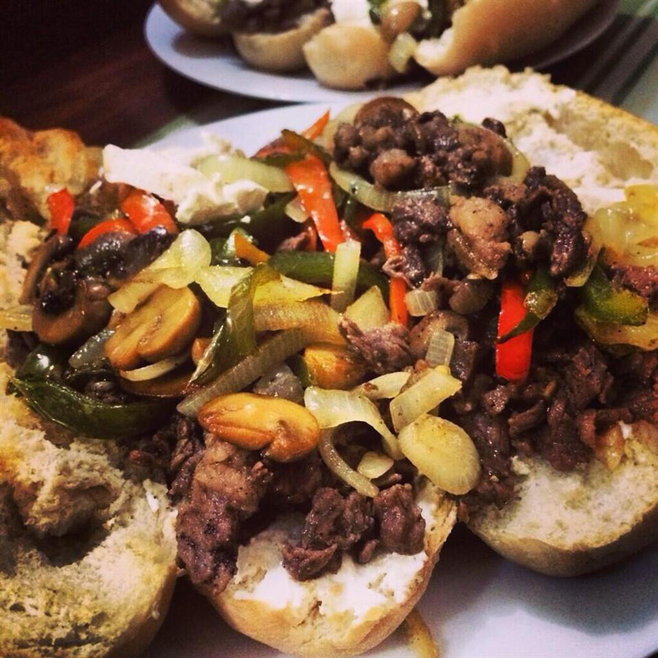

Steak Sandwich Recipe

Description
These Philly cheesesteak sandwiches are made with a delicious seasoning of herbs and spices. I purchase steak that has been sliced for making stir-fry, which takes a little less time, but achieves the same results.
Ingredients
- Sirloin steak
- Vegetable oil
- Onion
- Capsicum
- Swiss cheese
- Bread roll
- Seasoning
Steps
- Prehead oven
- Coat sirloin steak with seasoning
- Heat the oil and cook steak. Set aside once cooked
- Add onion and capsicum to oil and saute until tender
- Cut bread rolls and place meat, onion, capsicum and cheese on top
- Place in oven until cheese is melted